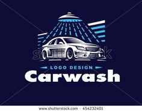
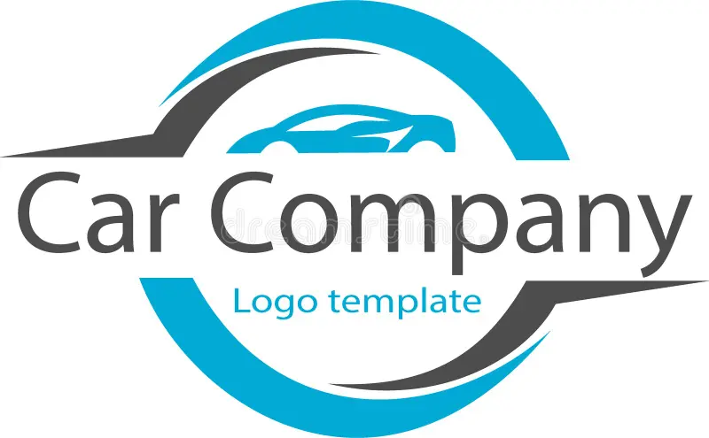
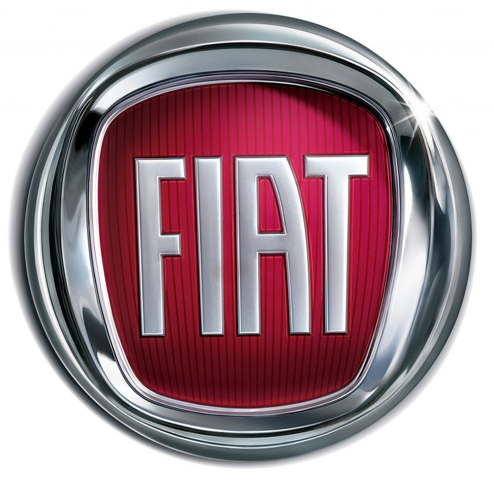
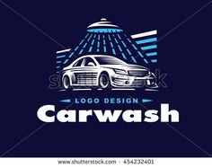
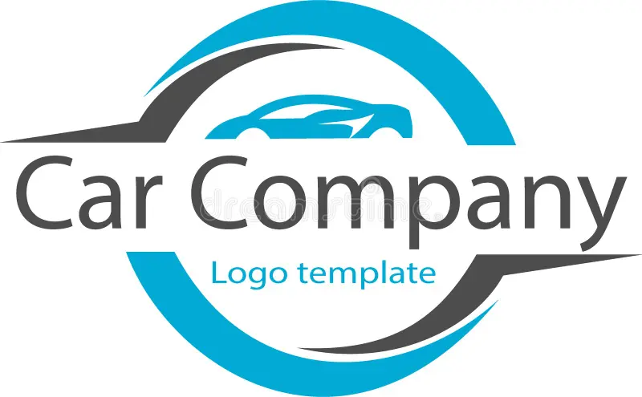
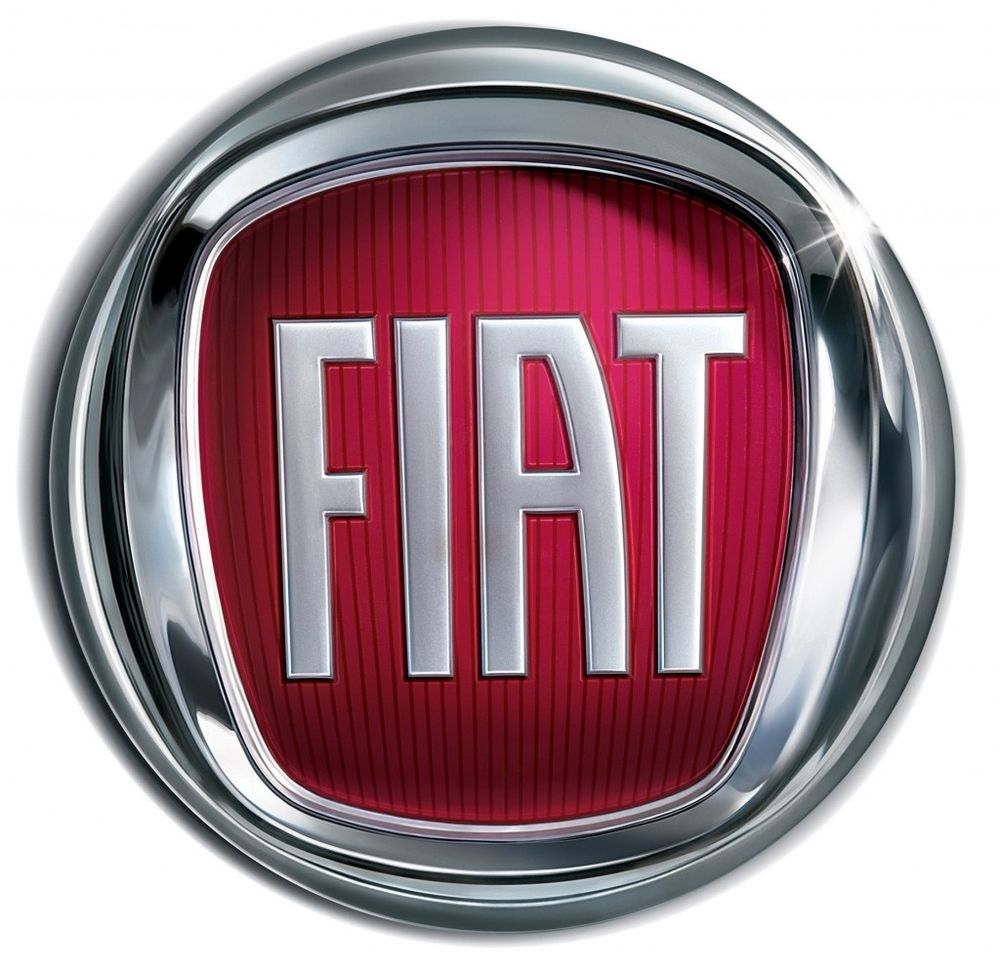

Ram faz postagem misteriosa e sugere retorno do V8 Hemi em junho
Após saída de Tavares, RAM promete grande anúncio em 8 de junho e reacende rumores sobre volta do motor V8 Hemi à linha 1500
Após a turbulenta saída de Carlos Tavares do grupo Stellantis, responsável pelas marcas Jeep, Ram e outras no fim do ano passado, muito se falou sobre o retorno do icônico motor V-8 Hemi, que havia sido aposentado pelo executivo em favor do Hurricane de seis cilindros e do Charger EV. Mas parece que os fãs podem ficar animados, já que RAM fará um ''grande anúncio'' no próximo dia 8 de junho. Será o retorno do Hemi? Existem grandes indicativos que sim. Há alguns meses, em entrevista ao Motor1 US, Kuniskis deixou claro que o retorno do V8 Hemi não estava fora de questão. Segundo o executivo, o maior obstáculo seria adaptar o motor à arquitetura elétrica da nova geração da RAM 1500, mas o desafio era técnico — não estratégico.
Ram 1500 TRX (BR)

Post no Instagram reforça especulações
A RAM adicionou mais lenha à fogueira ao publicar uma imagem no Instagram mostrando Kuniskis ao lado do apresentador Dave Sparks, do programa Diesel Brothers, e um ator vestido como piloto de caça. A legenda dizia: Nos comentários, Sparks escreveu: “A RAM está em boas mãos com Tim”. A combinação da frase com o tom da postagem só aumentou os rumores sobre o possível retorno do V8.

Tavares e o fim do V8
Como citado anteriormente, Carlos Tavares foi o principal responsável por enterrar o Hemi. Agora, sua ausência parece ter reaberto espaço para que a Stellantis resgate a arquitetura Gen III, lançada em 2003 e usada amplamente por Dodge e RAM até recentemente. Em março, também foram vazados alguns rumores ao portal MoparInsiders. Citando fontes não identificadas, os relatórios afirmavam que o conglomerado em breve começará a fabricar motores Hemi V8 de 5,7, 6,4 e 6,2 litros sobrealimentados em sua fábrica de motores em Dundee, no Michigan, a sudoeste de Detroit. Um relatório de dezembro, depois que Carlos Tavares pediu demissão no início daquele mês, alegou que muitos dentro da Stellantis não queriam matar o icônico motor.

Flexibilização de emissões
Tavares foi a peça-chave por trás do fim dos motores Hemi e, agora que ele se foi, parece que há espaço novamente para motores maiores. De acordo com o relatório, a Stellantis baseará os motores na arquitetura Gen III lançada em 2003. Também há rumores de que a montadora adicionará uma variante de deslocamento ainda maior à sua linha. A recente flexibilização nas normas de emissões pelo governo norte-americano também contribuiu para esta decisão. Com menos pressão sobre a indústria para acelerar o processo de eletrificação, a possibilidade de um Charger com motor V8 movido exclusivamente a gasolina também voltou a ser muito plausível.
 




